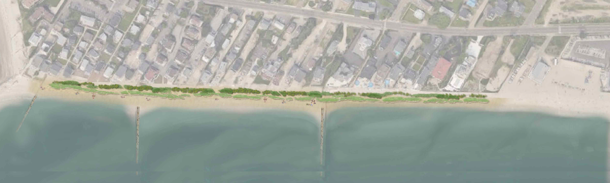
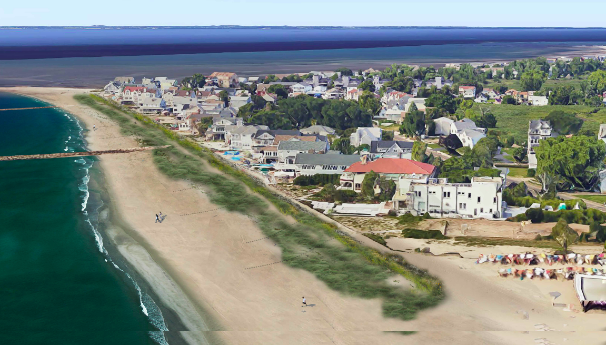
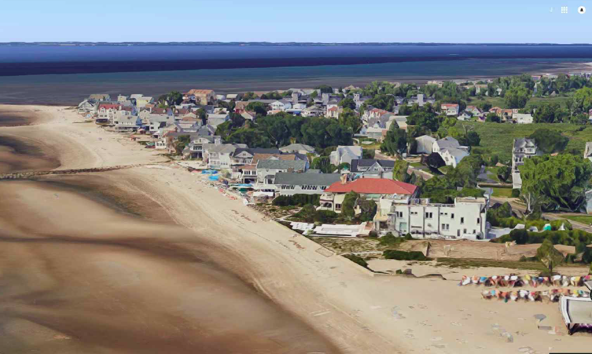
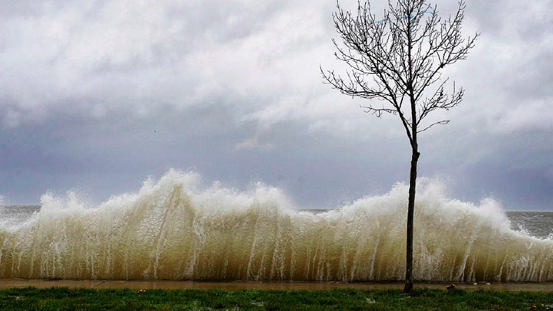
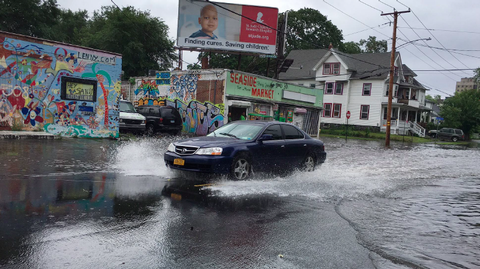
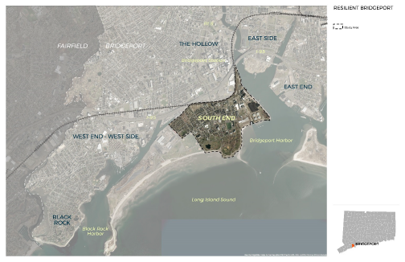
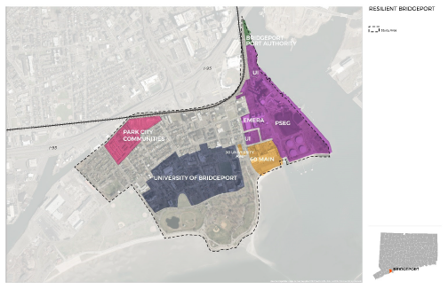
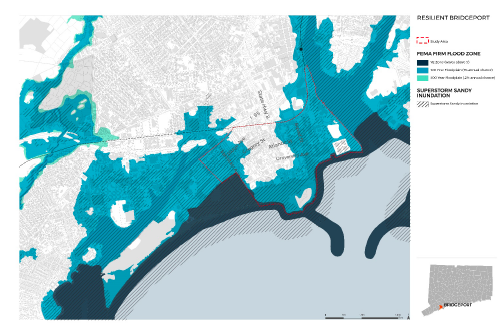
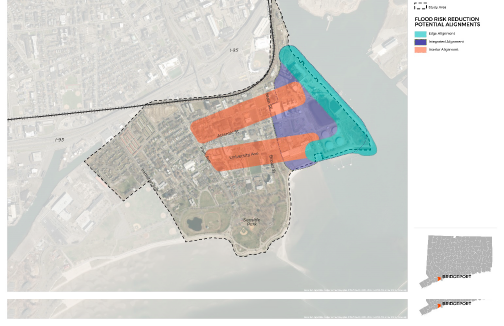

New Haven
1. Rendering of a living shoreline as part of a Long Wharf development
Credit:New Haven Engineering Dept
2. Schematics of living shorelines for East Shore Park
Credit:New Haven Engineering Dept
3. Schematics of living shorelines for East Shore Park
Credit:New Haven Engineering Dept
Fairfield
1 - An existing beach berm
Credit:Jan?
2 - Wastewater treatment plant adjacent to Pine Creek as referenced in story
Credit:Jan?
3 - Pine Creek tide gates
Credit:Jan?
4 - homes along Pine Creek - which are really just a street width away from LIS & so are very much subject to flooding
Credit:Jan?
5 - House on Fairfield Beach Road that is literally in LI Sound
Credit:Jan?
6-8 - These are renderings of a potential additional vegetated dune from Penfield Beach to Reef Rd - referenced in story
Credit:?
6

7

8

5 - House on Fairfield Beach Road that is literally in LI Sound
Credit:Jan?
Stonington
1 - 7, Sandy flooding
Credit:Jan?
1
2
3
4
5
6
7
7-8 breakwater
Credit:Jan?
7
8
Bridgeport
These are too small to use. We'd have to ask for higher res versions.
1-2 - Resilient Bridgeport Powerpoint
Credit:?
1

2

3-6 - Resilient Bridgeport report figures
Credit:Jan?
3

4

5

6



.jpg)